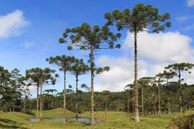
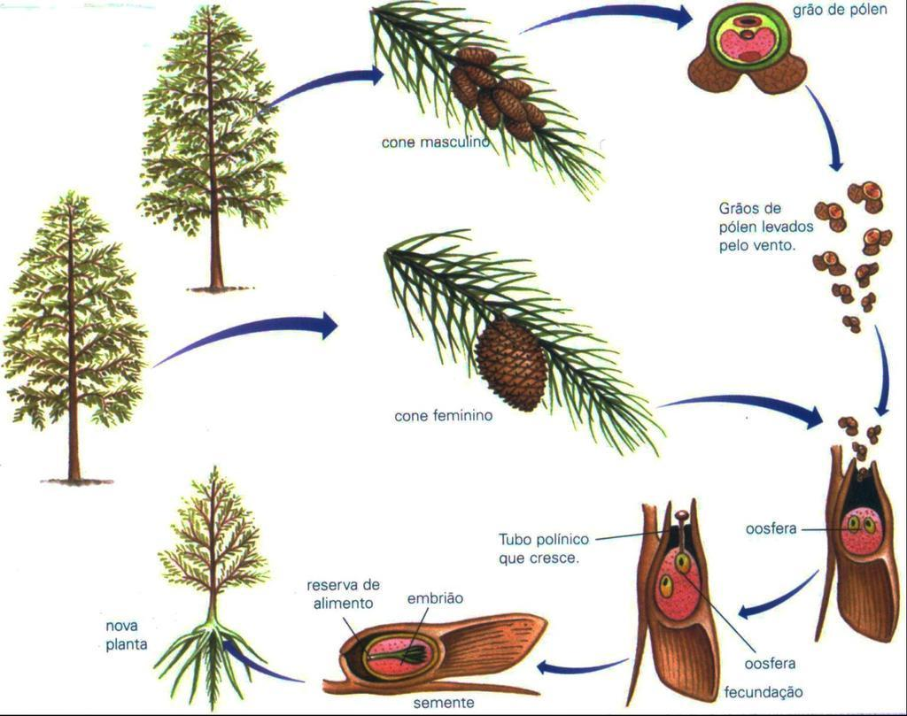

Gimnospermas
O segundo grupo de traqueófitas a surgir foram as gminospermas. Essas foram as primeiras plantas a apresentar sementes, elemento que permitiu a fecundação sem a necessidade de água para o deslocamento do gameta masculino.
Estrutura
Gimnospermas são árvores de médio a grande porte. Elas apresentam grão de pólen e tubo polínico, estrutura que leva o gameta masculino ao gameta feminino. Elas são plantas heterósporas, ou seja, há dois tipos de esporos, que dão origem à gametófitos femininos, formados nos megasporângios, e masculinos, formados nos microsporângios.
Ciclo de vida
Nas plantas gimnospermas, os espóros não são liberados do corpo dos esporófitos, sendo, em partes, desenvolvidos nos próprios esporângios. O óvulo corresponde ao megasporângio, que gera uma célula haploide funcional, a qual dá origem ao gametófito feminino que forma as oosferas. Os megasporângios localizam-se em estróbilos chamados microsporangiados.
No microsporângio, cada micrósporo formado dá origem ao gametófito masculino, que corresponde ao grão de pólen. Como as gimnospermas não possuem frutos, não ocorre a polinização animal. O pólen é liberado de dentro do microsporângio ainda imaturo e é transportado pelo vento (polinização anemófila).
Ao alcançar o ovário, o grão de pólen germina e dá origem ao tubo polínico, e há a formação de dois gametas masculinos. O tubo polínico conduzirá os gametas masculinos até o gametófito feminino.
Após a liberação de um desses gametas masculinos, ocorre a fecundação e a formação da semente. A semente é uma estrutura formada pelo embrião, reserva nutritiva e envoltórios de proteção.
Ao se desprenderem do estróbilo, as sementes entram em contato com o solo e germinam, dando origem a outro esporófito que reinicia o ciclo.
